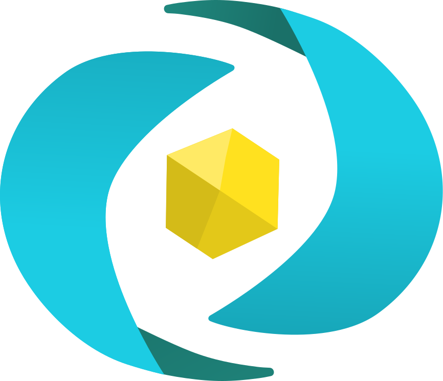
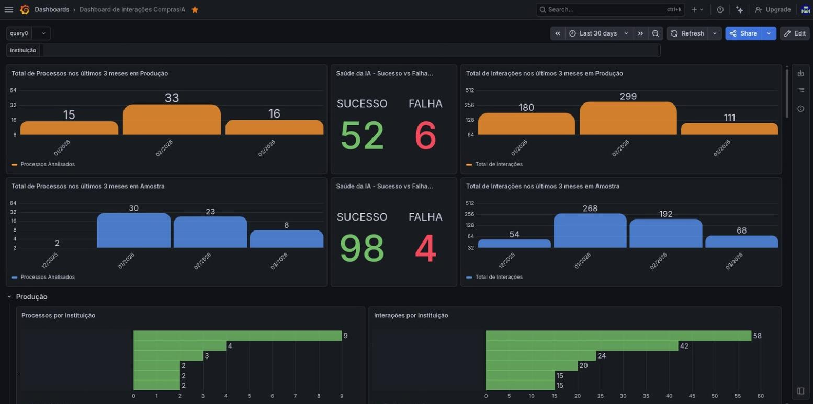
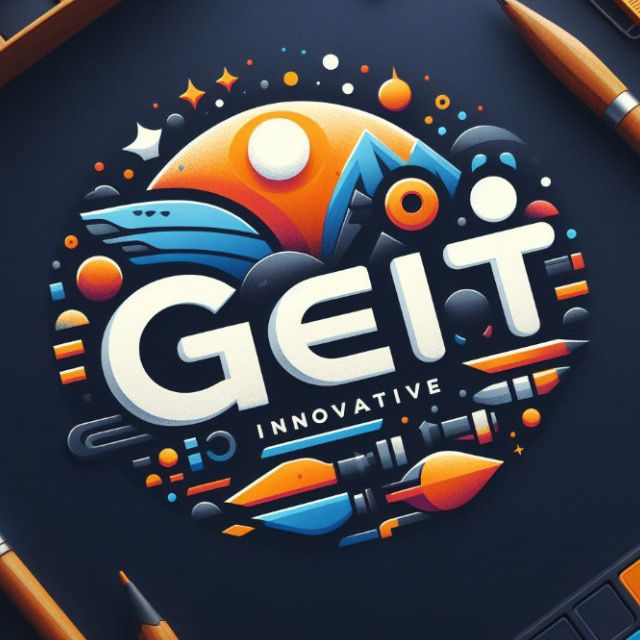
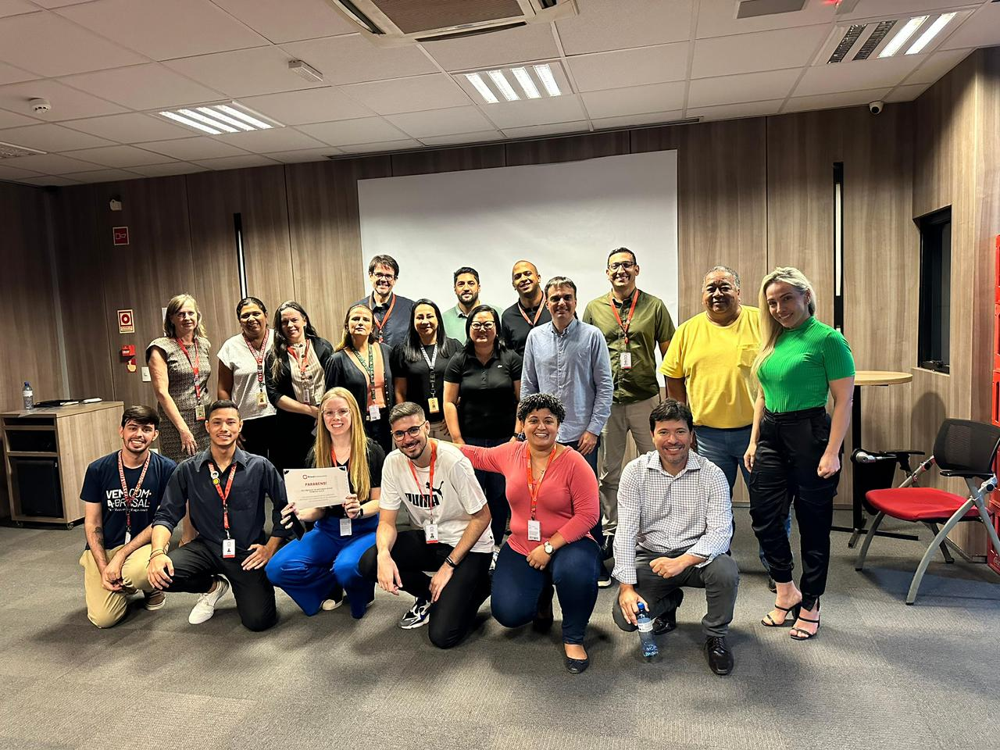
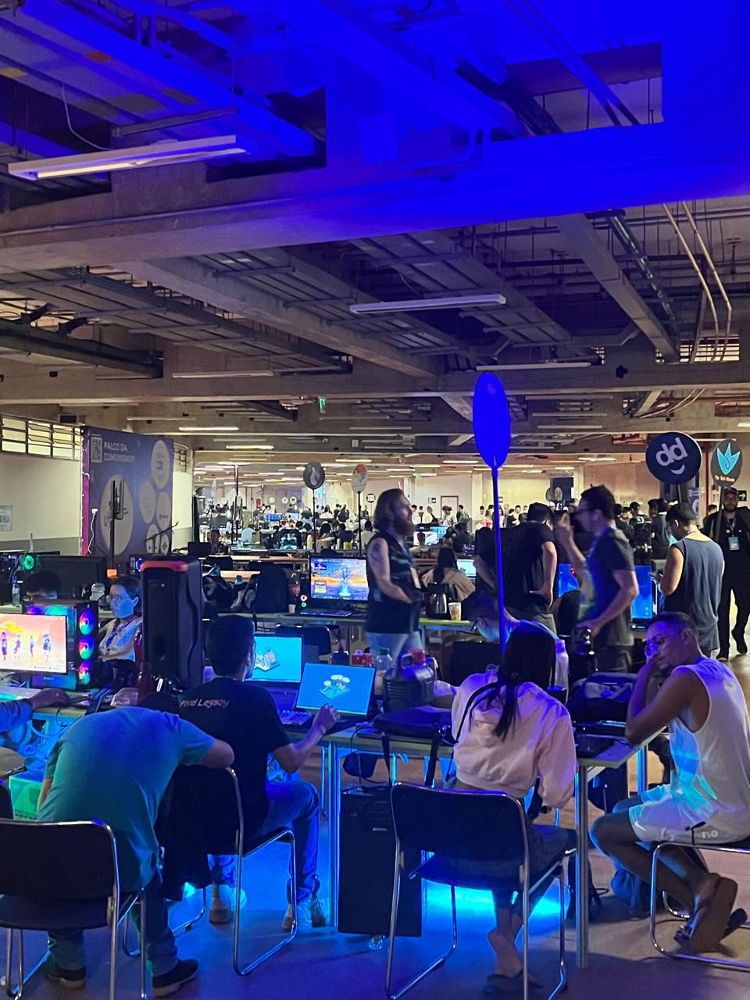
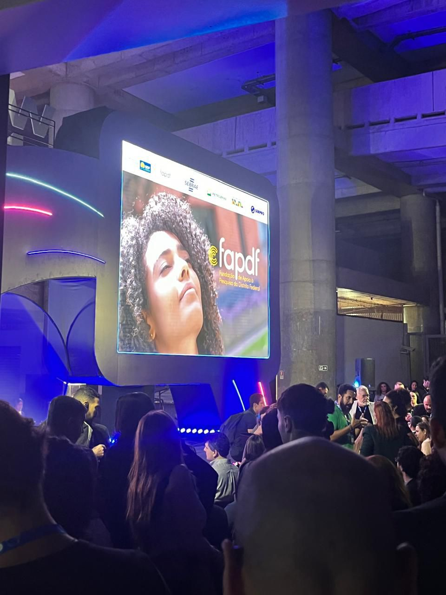
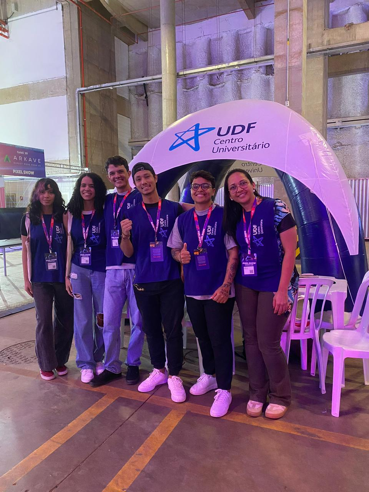

Cases de Sucesso

Case ComprasIA: Monitoramento e Conformidade com IA
Plataforma SaaS | Lei nº 14.133/2021
O Cenário & O Desafio
O desenvolvimento do sistema "ComprasIA" exigia rigor absoluto em compliance com a Nova Lei de Licitações. O desafio era estruturar fluxos complexos de automação e dar visibilidade em tempo real ao comportamento das Inteligências Artificiais em múltiplos ambientes (DEV, AMOSTRA, HML e PRODUÇÃO), diagnosticando falhas e sucessos operacionais de forma ágil.
A Solução
Implementei um sistema robusto de orquestração de dados e métricas gerenciais. Estruturei painéis de observabilidade para acompanhamento da saúde da IA e apliquei governança técnica na esteira de desenvolvimento de novas features (como o "Compra Match").
Frentes de Atuação:
- Inteligência de Dados e Dashboards: Criação e ajuste de filtros no Grafana para monitorar os logs de interação dos LLMs, categorizando processos analisados e taxas de sucesso/falha institucionais.
- Automação de Fluxos (n8n): Troubleshooting avançado e orquestração de workflows. Atuação cirúrgica na correção de requisições web (nós de HTTP Request), otimizando o tráfego de dados.
- Gestão Ágil (Jira): Estruturação de épicos, títulos e descrições detalhadas no Jira para coordenar a evolução da plataforma e organizar o product backlog.
O Impacto
Garantia de conformidade jurídica das operações geradas por IA, com total transparência nos painéis de controle. O acompanhamento via Grafana permitiu visualizar centenas de interações simultâneas, facilitando tomadas de decisão rápidas e precisas pela liderança.


Case GEIT: Gestão Estratégica de Inovação
Brasal Refrigerantes | PMO de Inovação
O Cenário & O Desafio
A Diretoria Financeira da Brasal[cite: 22], coração das operações corporativas, exigia alto nível de governança e precisão. O desafio era atuar como ponte entre Finanças e TI para conectar a solidez tradicional com a agilidade das novas tecnologias, eliminando gargalos operacionais e criando uma arquitetura orientada a dados.
A Solução
Idealizei e estruturei o departamento de Gestão Estratégica de Inovação Tecnológica (GEIT) para atuar como um hub de transformação digital interno. Apliquei Design Thinking e Lean Inception para mapear as raízes dos problemas e repensar a forma de trabalho da diretoria.
Frentes de Atuação:
- Orquestração e Automação de Fluxos: Desenho de rotinas para substituir processos lentos[cite: 23], liberando o time para análises de alto nível.
- Inteligência Artificial na Logística: Liderança de um projeto inovador com IA em parceria com a UCB para automação de paleteiras[cite: 24].
- Integração Logística: Implantação de sistema com tecnologia RFID para automação do acesso de veículos [cite: 25] e integração com ERPs nativos.
O Impacto
A implementação representou um marco de maturidade operacional, provando que a tecnologia alinhada estrategicamente é o principal motor de eficiência, redução de custos operacionais e escalabilidade corporativa.

Case Qualidade: Estruturação Ágil de Backlogs
Sinerji Gestão e Sistemas
O Cenário & O Desafio
A gestão simultânea de múltiplos projetos de desenvolvimento frequentemente gera gargalos no fluxo de aprovação e aumento de inconsistências técnicas. O desafio central era blindar as entregas da equipe sem engessar a velocidade das sprints[cite: 17].
A Solução
Implementação de um framework ágil rigoroso associado a um novo Sistema de Gestão da Qualidade (SGQ). Atuei na liderança das cerimônias (Scrum/Kanban) focando na facilitação e na remoção ativa de impedimentos.
Frentes de Atuação:
- Garantia de Qualidade (QA): Reestruturação do fluxo de aprovação de tarefas[cite: 19], inserindo testes funcionais e de regressão como requisitos obrigatórios antes do Go-Live.
- Sinergia Técnica e Negócio: Refinamento contínuo do backlog junto aos POs[cite: 18], garantindo documentação clara no Confluence e priorização orientada a valor.
O Impacto
Redução drástica de 70% na taxa de erros e retrabalho (bugs)[cite: 19], otimizando o Lead Time das entregas críticas e aumentando exponencialmente a "velocity" da equipe técnica.
Case Digitalização: Sistema "Arquivo Morto"
Secretaria de Educação
O Cenário & O Desafio
O gerenciamento de documentos de ex-alunos era 100% analógico[cite: 38]. Procurar fichas fisicamente no "arquivo morto" resultava em horas de buscas manuais, tornando o atendimento lento e propenso a erros.
A Solução
Projetei e desenvolvi do zero uma solução de software (banco de dados e interface) para digitalizar o acervo[cite: 37], vinculando registros físicos a coordenadas digitais exatas dentro da sala de arquivos.
Frentes de Atuação:
- Desenvolvimento Full-Stack: Estruturação de banco de dados relacional e criação de uma interface intuitiva [cite: 38] para servidores sem conhecimento tecnológico operarem.
- Otimização de Fluxo de Suporte: Introdução de boas práticas de chamados técnicos [cite: 39] para a equipe administrativa.
O Impacto
O tempo médio de busca por documentos caiu de horas para poucos segundos [cite: 38]. O projeto eliminou gargalos burocráticos e otimizou radicalmente o atendimento ao público.

Case Infraestrutura: Continuidade Operacional
Arte Foto Formaturas
O Cenário & O Desafio
Em ambientes operacionais de alto volume, o tempo de inatividade sistêmica (downtime) representa prejuízo imediato[cite: 32]. O desafio era modernizar a base tecnológica e manter a agilidade do suporte.
A Solução
Atuei como ponto focal preventivo e reativo para manter todo o parque tecnológico estável e os colaboradores produtivos, com foco em métricas de resolução ágil[cite: 32, 34].
Frentes de Atuação:
- Suporte Especializado (N1 e N2): Diagnóstico ágil e resolução de incidentes críticos envolvendo hardware, software e redes corporativas[cite: 32].
- Manutenção Preventiva: Execução de planos de revisão[cite: 33], prolongando a vida útil dos equipamentos.
O Impacto
Continuidade operacional garantida e minimização do impacto de falhas sistêmicas na rotina da empresa[cite: 32], permitindo foco total nas entregas core do negócio.
Resumo de Trajetória Profissional
Assistente de Gestão de Projetos / Scrum Master [cite: 15]
Sinerji Gestão e Sistemas [cite: 15] Maio 2024 - Presente [cite: 16]PMO de Inovação & Transformação Digital [cite: 22]
Brasal Refrigerantes [cite: 22] Out 2023 - Out 2024 [cite: 28]Técnico em Informática / Suporte Especializado [cite: 30]
Arte Foto Formaturas [cite: 30] Jan 2022 - Out 2023 [cite: 29]Estagiário em Análise e Desenvolvimento [cite: 35]
Secretaria de Educação [cite: 35] Nov 2020 - Nov 2021 [cite: 36]Imersão Tecnológica e Inovação
Campus Party & Atualização Contínua
Acredito que a verdadeira inovação não acontece apenas dentro do escritório. Por isso, participo ativamente e acompanho os maiores eventos de tecnologia do país, como a Campus Party. Essa imersão contínua me permite estar sempre à frente das novas tendências em Inteligência Artificial, metodologias ágeis e automação de processos.


Certificações em Destaque
Scrum Master [cite: 58]
LinkedIn Learning [cite: 58]
IA para Projetos [cite: 59]
PMI [cite: 59]
Modelagem de Dados [cite: 60]
LinkedIn Learning [cite: 60]
Análise de Dados [cite: 60]
Fundação Bradesco [cite: 60]
Técnicas Scrum [cite: 66]
PMI [cite: 66]
Python Básico [cite: 61]
LinkedIn Learning [cite: 61]
Hard Skills [cite: 48]
Vivência Acadêmica e Formação [cite: 40]
Diretor de Projetos e Inovação (LAACT)
Liga Acadêmica de Artes, Ciências e Tecnologia - UDF
Durante minha jornada no UDF, lidero iniciativas que promovem a integração entre tecnologia e inovação. Busco constantemente soluções práticas para desafios reais, moldando competências técnicas e interpessoais da equipe.

Ciência da Computação (Bacharelado) [cite: 42]
UDF Centro Universitário | Jan 2022 - Dez 2026 [cite: 41, 52]
Análise e Desenvolvimento de Sistemas (Tecnólogo) [cite: 44]
Unicesumar | Jan 2021 - Nov 2022 [cite: 43, 53]